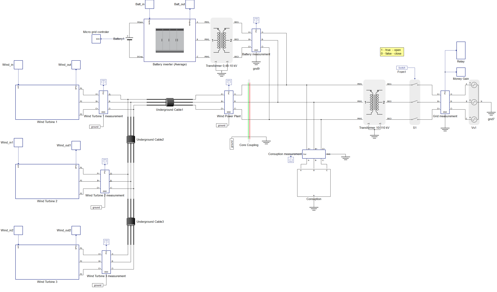
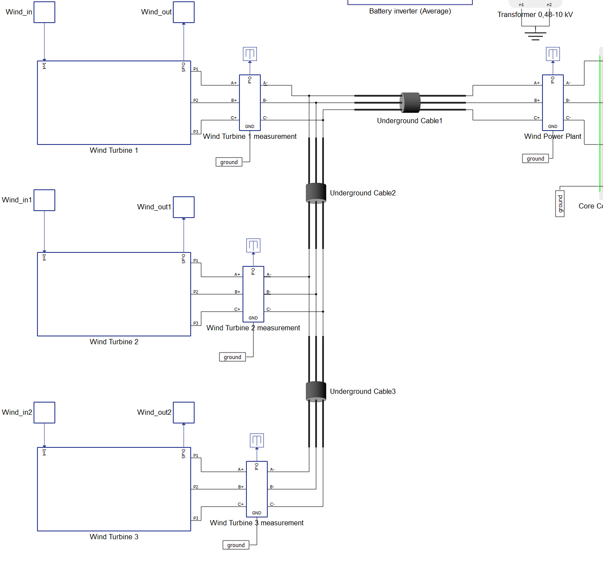
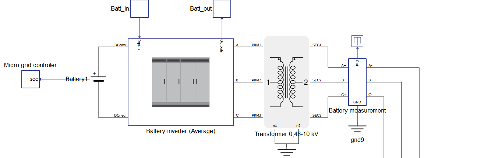
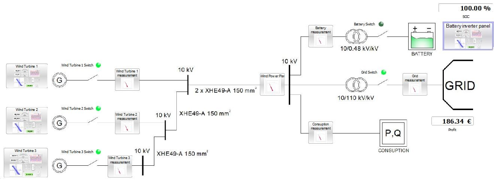
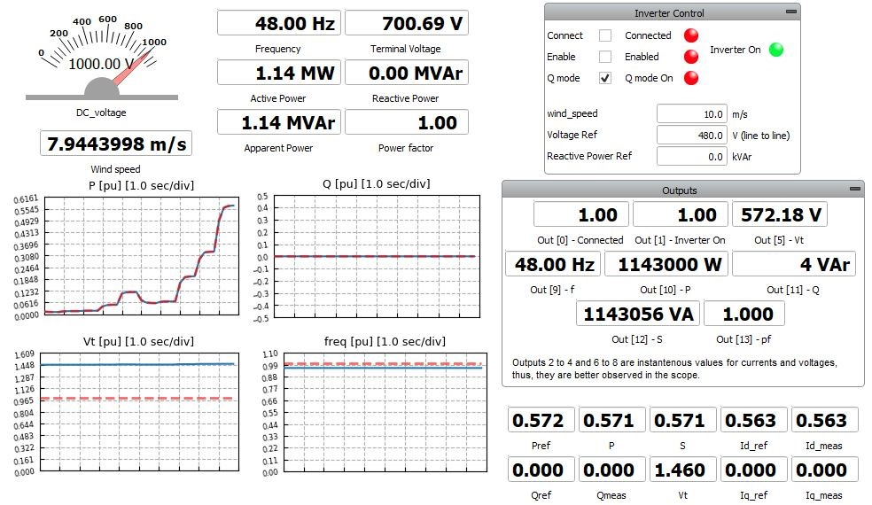
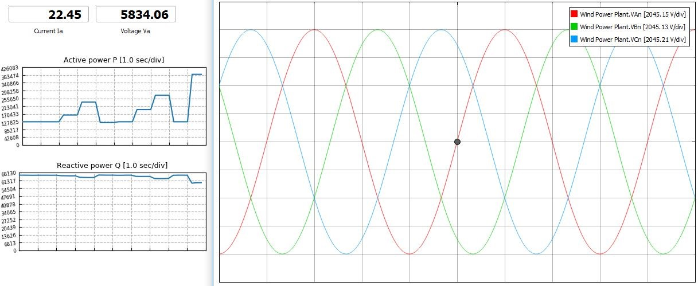
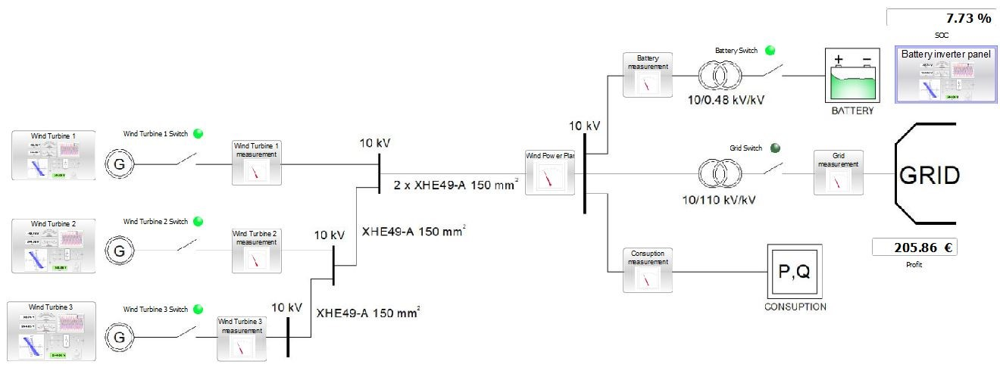
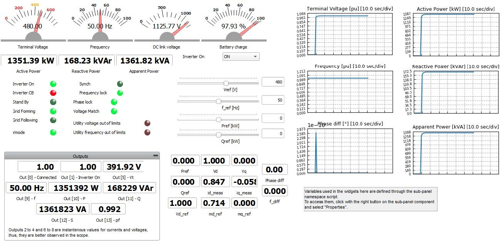
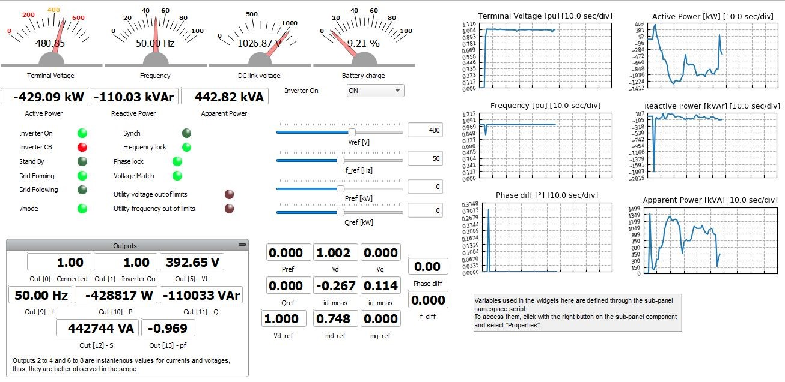
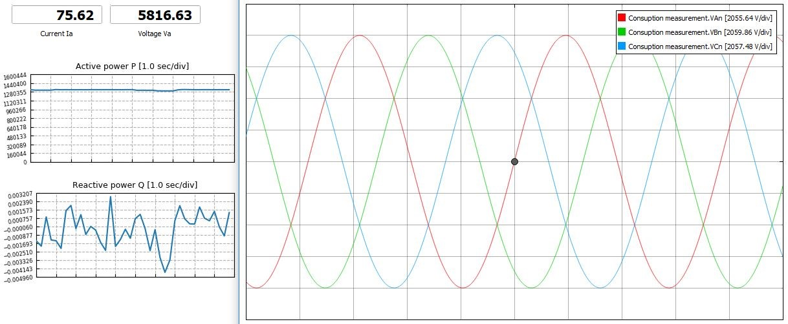

Microgrid powered by a wind farm
Microgrid operation of a mini wind farm, battery unit, large consumer area, and power system connection in both island and reconnection modes
Introduction
A microgrid is an electrical distribution system with a set of interconnected consumption sources (energy consumers,batteries, etc) and distributed generation sources (renewable energy sources, batteries, etc) that operate as a single controlled source within clearly defined electrical boundaries. Additionally, depending on topological or economic conditions, microgrids have the ability to disconnect at one point from the power system and operate independently to provide power to its own consumers (called “island mode”). In the following example, the microgrid network consists of a miniature wind farm, a battery unit, a large consumer area, and a connection to the power system. The purpose of the example is to show how the microgrid network works in island mode in the case of a failure in the power system, and its re-connection to the system after the failure of the system has been resolved. In these two cases, the consumer area will not be affected by the transitional states.
Model description
The microgrid model (Figure 1) features a wind farm consisting of three wind turbines, with each turbine block consisting of a generator, transformer, inverter, control unit, and a switch.

The wind generators have a maximum outgoing power of 2 MW, a nominal voltage of 690 V, a swept area of 7854 m2, and a 0,69/10 kV/kV transformer. The wind turbines are connected in series via underground cable lines (XHE 49-A 150 mm2) to the energy transformer (10/110 kV / kV), which is the point of connection to the electric power system. The cable lines (XHE 49-A 150 mm2) were selected in accordance with the technical recommendations for electricity distribution considering the rated current of each wind turbine and their corresponding serial connections. The distance between wind turbines is 500 m. The connection of wind turbine WT1 with WT2 is constructed with one cable core per phase for the current of 116 A, which is the maximum value of the WT1.

Nominal current load for the cable line is 315 A. Connection between WT2 and WT3 is also done with the same cable where the current load is 232 A. The entire wind farm is connected to the power system via two underground cable lines (2 x XHE 49-A 150 mm2) due to the current load of 347 A, which is higher than the prescribed 315 A for one cable per phase.
As the production of active power depends on the wind speed, the difference in generation is taken over by a battery unit with a capacity of 1.6 MVA and a block of inverter and a transformer (Figure 3). The battery unit consists of a 1.6 MVA battery, an inverter with a nominal DC voltage of 1000 VDC and an output voltage of 0.48 kV (50 Hz), and a 2 MVA transformer (0.48/10 kV/kV) with the Yy0 vector group.

The consumption block within the microgrid is modelled for a predominantly active power consumption, which corresponds to a group of non-industrial consumers (such as residential buildings, street lighting, universities, hospitals, etc.) with a total power of 1.3 MVA.
The 10/110 kV/kV transformation is modelled by a transformer that has a nominal power of 31.5 MVA, a transformation ratio of 10/110 kV/kV, vector group Yy0, a switch for connection to the power system, and the Elec-power system Component that acts as a network with infinite power.
In order to monitor the values of voltage, current, active, and reactive power, measurements are made at the output of all system elements.
Simulation
This application comes with a pre-built SCADA panel (Figure 4). The panel offers most essential user interface elements (widgets) to monitor and interact with the simulation in runtime. You can customize it freely to fit your needs.

The operating principle of the system is described in the next three cases:
- The system operates in a normal mode where the wind farm generates energy;
- the battery is already fully charged (100%);
- the produced energy is transferred to the power system while the consumer is powered from the power system itself.
Wind speeds for all cases are loaded directly from the file so that energy production is variable and is directly dependent on wind speed. Loading is done through the Wind speed.txt file that is filled with wind speed data. The location of the data file is located in directory of the model.
By starting the simulation and adjusting the battery to 100%, we can see that the switch with the battery unit is open because in the normal operating mode of the system, there is no need for battery activation. All produced power of the wind farm is transferred into the power system, and experimental calculations show the profit from the sale of generated energy.


To represent the third case, let's assume a fault has occurred and system voltage drops below 95% Vn. The microgrid is automatically switched to island mode by an undervoltage relay that detects the error.
After switching to island mode, generators continue to operate separated from the microgrid to avoid battery overload. The consumer is now powered directly from the battery unit that forms the grid, and this mode lasts until the battery charge reaches 5% of its maximum capacity. Figure 7 and Figure 9 show the microgrid behavior in this operating mode.


After the battery reaches 5% of capacity, wind turbine switches turn ON and all generated energy is delivered to consumer. Any surplus energy is used to recharge battery. This process lasts until the battery recharges to 100% of its maximum capacity or until it can recharge from the power system. Figure 9 and Figure 10 show the microgrid behavior under these conditions.

After the fault is resolved, the microgrid is automatically connected to the power system.
In case the battery is not fully charged to 100%, it is charged by production from the wind farm. If the production from the wind farm is not sufficient, the remaining energy is taken from the power system. During this time, the consumption area is supplied directly from the power system. After the battery unit is fully charged, it automatically disconnects from the system and until the next request for "island mode" is sent from the microgrid. The wind turbines continue to produce energy and deliver it to the power system. Figure 11 shows the wind production diagrams under these conditions.

After this case, the working cycle of the microgrid is closed. In all of the above cases, the consumer did not endure a blackout period, and experienced no drop in power quality.
Test automation
We don’t have a test automation for this example yet. Let us know if you wish to contribute and we will gladly have you signed on the application note!
Example requirements
Table 1 provides detailed information about the file locations and hardware requirements for running the model in real-time, followed by the HIL device resource utilization when running the model using this minimal hardware configuration. This information is provided to help you with running and customizing the model as you see fit.
| Files | |
|---|---|
| Typhoon HIL files | examples\models\microgrid\wind farm microgrid wind farm microgrid.tse wind farm microgrid.cus |
| Minimum hardware requirements | |
| No. of HIL devices | 1 |
| HIL device model | HIL101 |
| Device configuration | 1 |
| HIL device resource utilization | |
| No. of processing cores | 2 |
| Max. matrix memory utilization | 87.82% (core1) 16.46% (core0) |
| Max. time slot utilization | 64.55% (core1) 23.18% (core0) |
| Simulation step, electrical | 5 µs |
| Execution rate, signal processing | 400 µs |
Authors
[1] Simisa Simic
[2] Kristian Monar